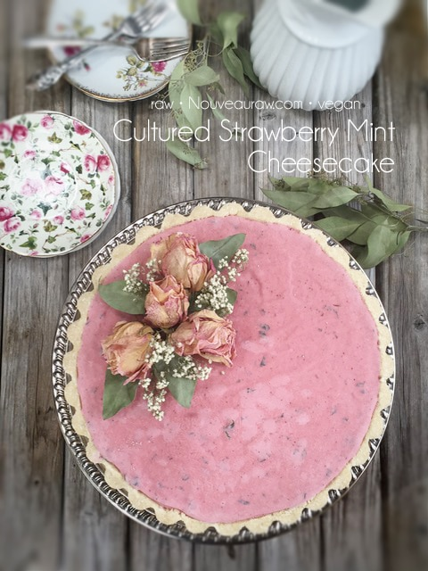

Cultured Strawberry Mint Cheesecake

Cultured Strawberry Mint Cheesecake is a gentle way of saying, “Gut Healthy, Life Promoting Strawberry Mint Cheesecake.” If you enjoy ramping up the nutritional qualities of the foods you eat, I highly recommend learning how to culture certain foods. This cheesecake creates a silky, creamy, tangy mouthful–all without the need for dairy products. Ready to give it a try? Let me touch base on a few important ingredients.
Cashews
- Cashews are the best nut to use when making cheesecakes, but you could also try using peeled almonds or macadamia nuts. These nuts are more fibrous than cashews, so they won’t yield that same creamy consistency, but it’s nice to have options in a pinch.
- One of the keys steps in creating a silky texture is to make sure to soak the cashews prior to making the batter. This will soften them, making it really easy for the blender to do its job.
- Make sure that the cashews are salt-free.
Probiotics
- Broken down, the word probiotic means “for life” or “promoting life.” Probiotics hold the key not just for better health and a stronger immune system, but also for healing digestive issues.
- When culturing ANY food, it is vital to use sterile utensils and bowls to prevent bad bacteria from forming. If you see any mold, whether fuzzy, black, or pinkish…toss it. This usually indicates that something you used was contaminated.
- I added a link down below to the brand I use.
Sunflower Lecithin
- Sunflower lecithin is made up of essential fatty acids and B vitamins. It helps to support the healthy function of the brain, nervous system, and cell membranes. It also lubricates joints and helps break up cholesterol in the body.
- It comes in two forms, powder and liquid. I prefer powdered raw sunflower lecithin. The liquid version has a thick, dark, and sticky consistency with a nutty-seedy rich aroma.
- I use it in most cheesecake recipes because it is a natural emulsifier that binds the fats from nuts with water, creating a creamy consistency.
Tips and Techniques
- Blending: Next to the quality of ingredients that you use, blending is the next most important step when it comes to texture. To deliver that true creamy, silky-smooth cheesecake texture, you want to make sure that you don’t detect ANY grit in the filling.
- To create a striking look to this dessert, I kept the crust and filling pure white. In order to do this, I had to soak and skin the almonds before dehydrating them. From there, they were ground into a gorgeous white flour. It’s an extra step but well worth it, as you can see. Besides, it is very therapeutic to pop almonds out of their skins.
- If raw isn’t your priority, you can use store-bought flour. That’s entirely your call. The world is full of options.
 Ingredients:
Ingredients:
Yields one 9” Springform pan
Crust
- 2 1/2 cups shredded coconut
- 3/4 cup raw almond flour – read above
- 1/4 tsp Himalayan pink salt
- 1/4 cup raw coconut butter, softened
- 6 Tbsp water
- 3 Tbsp maple syrup or your choice
Culture base
Add in after cultured
Strawberry mint top layer:
- 2 cups organic strawberries, frozen, thawed
- 15 oz full-fat coconut milk, fresh or canned
- 1 Tbsp maple syrup
- Few drops liquid NuNaturals stevia
- Pinch Himalayan pink salt
- 2 Tbsp minced fresh mint leaves
Preparation:
Crust
- Assemble a Springform pan with the bottom facing up, the opposite way from how it comes assembled. This will help you when removing the cheesecake from the pan, not having to fight with the lip. Wrap the base with plastic wrap. This will make it easier to remove the pie when done… unless you plan on serving the cake on the bottom of the pan.
- In the food processor, fitted with the “S” blade, pulse the coconut, almond flour, and salt together.
- Be careful that you don’t over-process and head toward making a nut butter. Nothing wrong with that… just not our goal at the moment.
- Add the coconut butter, water, and sweetener. Process until the batter sticks together.
- Depending on your machine, you may need to stop the unit and scrape the sides down during this process.
- Test the batter by pinching it between your fingers. If it holds, it is ready.
- Distribute the crust evenly on the bottom of the pan, using even and gentle pressure. If you press too hard, it might really stick to the base of the pan, making it hard to remove slices. You can either just make the crust on the bottom of the pan or you can also bring it up the sides. Click (here) to learn how to create different crust forms.
- Set aside while you make the cheesecake batter.
Culturing Process
- Drain the soaked cashews and discard the soak water. Place in a high-speed blender.
- Culture the cashews, water, probiotic, and prebiotic powders by blending them together in a high-powered blender.
- Blend until the filling is creamy smooth. You shouldn’t detect any grit. If you do, keep blending.
- This process can take 2-4 minutes, depending on the strength of the blender. Keep your hand cupped around the base of the blender carafe to feel for warmth. If the batter is getting too warm, stop the machine and let it cool. Then proceed once cooled.
- Pour into a glass bowl, cover, and set on the countertop to culture for 24 +/- hours. The culturing time frame can vary depending on warm it is in the house.
- You can speed up the culturing process by placing the bowl in the cavity of your dehydrator (Excalibur), setting it on the lowest temp. Check after 6 hours and continue until it reaches a tangy taste.
Add to the Cultured Mixture
- In a high-powered blender, combine the cultured cashew cream, strawberries, coconut oil, sweetener, lecithin, lemon juice, nutritional yeast, and salt.
- You can use a different liquid sweetener if you are not comfortable with maple syrup and/or stevia. Just be aware of the different flavors and colors that the sweetener might impart.
- Immediately pour the batter into the pan.
- Gently tap the pan on the counter to remove any air bubbles.
- Chill in the freezer for 4-6 hours or until firm enough to add the strawberry mint topping.
Strawberry mint top layer:
- In the blender, put the strawberries, coconut milk, sweeteners, and salt. Blend until creamy smooth.
- Stir in the minced mint.
- Spread over the cheesecake and place it in the freezer overnight and then in the fridge for 12 hours. Leave in the freezer if you are making this in advance for a gathering.
- Store the cheesecake in the fridge for 3-5 days or up to 3 months in the freezer. Be sure that it is well sealed to avoid fridge odors.
- How to slice a cake. Click here.
Cover and allow it to culture for 24 hours.
This is the tart pan I chose to use for this cake. I lined the base with
plastic wrap, but it’s hard to see in the photo.
I like to use a straight-edged measuring cup to create a clean edge
crust. Just a helpful tip. :)
Add the cheesecake batter from the heavens…
See the bubbles in the cheesecake?
If you tap the cake on the tabletop (gently, this isn’t a time
to take out the day’s frustrations) it will bring the bubbles to the surface
and pop them.
© AmieSue.com